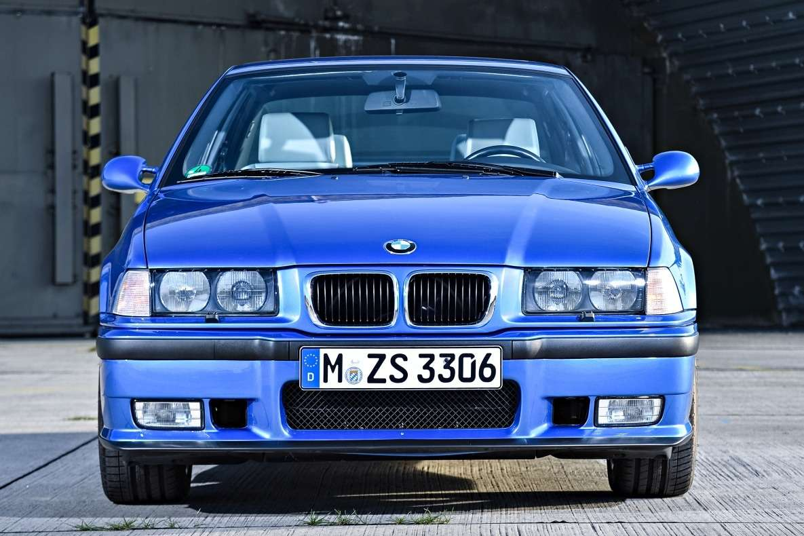
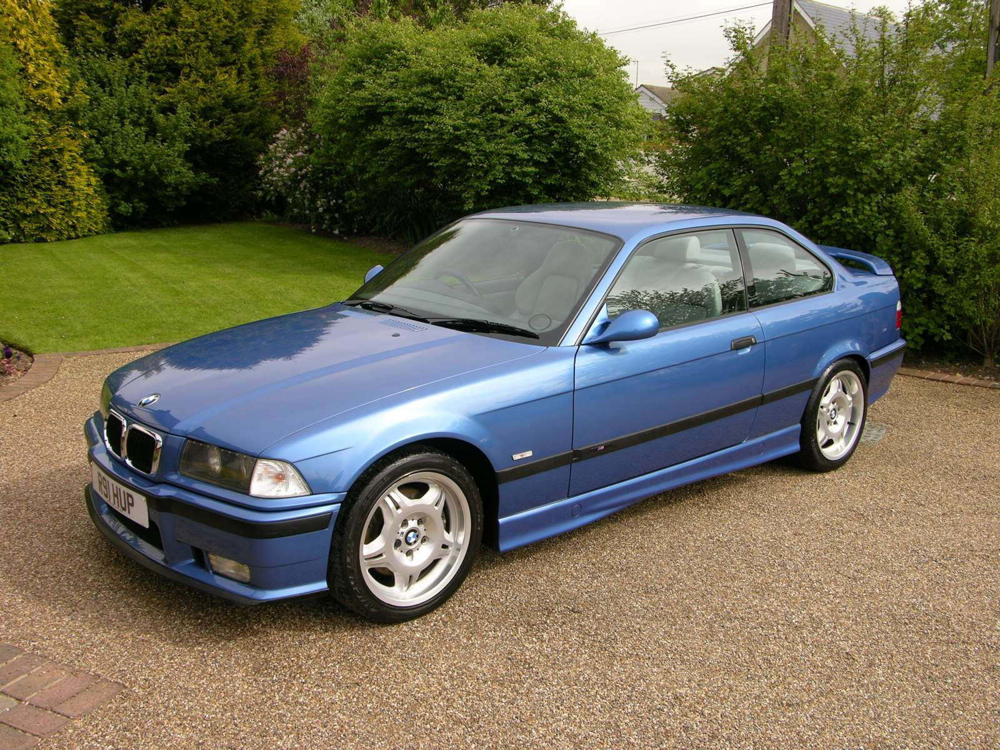
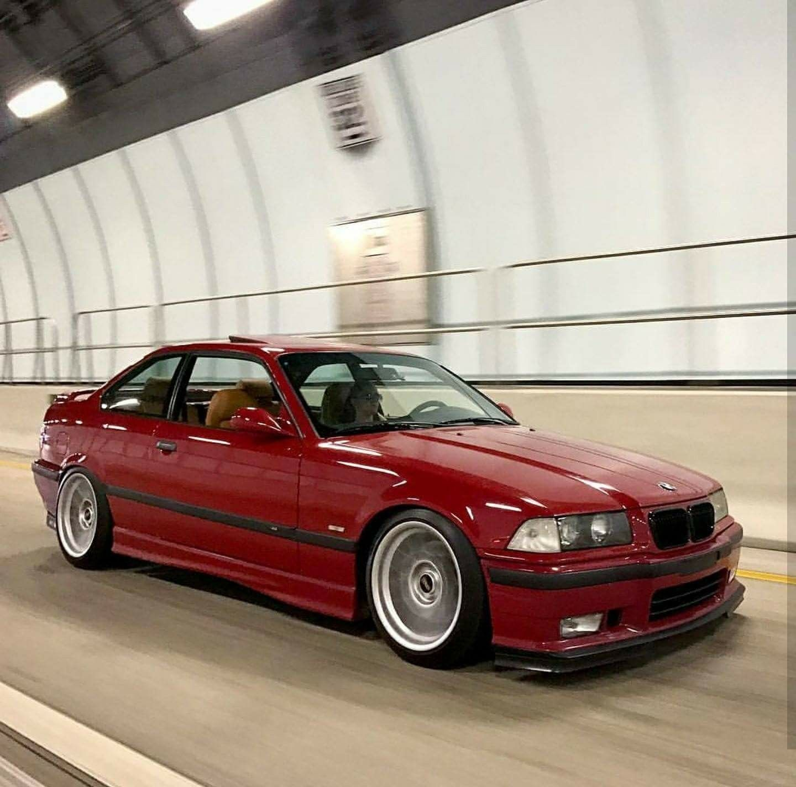

BMW M3 E36
BMW E36 M3, წარმოებული 1992 წლიდან 1999 წლამდე, იყო M3 სერიის მეორე თაობა, რომელიც ცნობილია თავისი განსაკუთრებული წარმადობითა და მრავალფეროვნებით. E36 3 სერიის პლატფორმის გაზიარებით, M3 ვარიანტმა აჩვენა სხეულის გამორჩეული მოდიფიკაციები, მათ შორის გაშლილი ფარები, აეროდინამიკური სარკეები და ექსკლუზიური M სამკერდე ნიშნები. E36 M3 სთავაზობდა ძრავის მრავალ ვარიანტს თავისი წარმოების განმავლობაში, მათ შორის 3.0-ლიტრიანი ექვსიანი ძრავის და 3.2-ლიტრიანი ვარიანტი შემდგომი მოდელებისთვის. ცნობილი თავისი დაბალანსებული მართვა და ზუსტი საჭე, E36 M3 უზრუნველყოფდა ამაღელვებელი მართვის გამოცდილებას როგორც ტრასაზე, ასევე ყოველდღიურ გზებზე. შესრულების, პრაქტიკულობისა და სტილის კომბინაციით, E36 M3-მა მოიპოვა უპირატესობა მართვის მოყვარულთა შორის, რომლებიც ეძებენ მაღალი ხარისხის სპორტულ მანქანას ყოველდღიური გამოყენებადობით.



contact
about